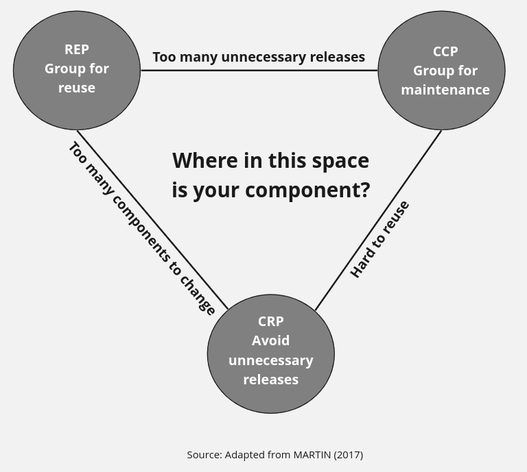

Component Principles
A component is the smallest unit that can be built, released and deployed on its own (a package, a jar, a DLL, a plugin). These principles cover how classes should be grouped into components, and how those components should depend on one another.
Classes grouped into a reusable component should share a common theme and be tracked and released together under a version number, so consumers know exactly what they're depending on and when it changes.
Without release numbers, there is no way to guarantee that components stay compatible with each other. The version also tells consumers when a new release is available and what changed in it, so they can decide whether to upgrade or stay on the current one for now. In short, a component shouldn't be a random grab-bag of classes; it needs a shared theme, and everything sharing that theme should ship, version and get documented together.
Classes that tend to change for the same reasons, at the same time, belong in the same component; classes that change for different reasons belong in different ones. It's the Single Responsibility Principle applied at the component level, so a single requirement change only forces a redeploy of one component.
When classes that always change together are split across components, a single requirement change forces several components to be reworked, revalidated and re-released instead of just one. CCP also mirrors the Open/Closed Principle: since no component can be completely closed to every kind of change, it's grouped instead around the changes it's closed to, so a given modification is likely to stay contained to a small number of components.
Classes that are normally reused together should live in the same component. The flip side matters too: don't bundle classes that aren't tightly related, or consumers end up depending on (and being forced to redeploy for) code they never actually use.
Classes are rarely reused in isolation, so the ones that collaborate as part of one reusable idea should sit together, with their dependencies on each other made explicit. The reverse case is the costly one: if component B only uses one class from component A, but A bundles other unrelated classes, then every change to any of A's classes forces B to be recompiled, revalidated and redeployed, even when the class B actually depends on never changed. Classes without a strong link to the rest shouldn't share a component.

Before moving on to coupling, here's a way to keep the three cohesion principles straight: think of shipping physical products.
- REP: you ship items packed in boxes, and the box itself is the reusable, versioned unit.
- CCP: items that tend to break or change together get packed into the same box.
- CRP: you don't make a customer buy the whole box if all they need is one item inside it.
The dependency graph between components must be a directed acyclic graph, with no cycles. If a cycle appears, break it either by inverting a dependency through a new interface, or by extracting the shared classes into a new component that both sides depend on instead.
This matters most once several people or teams work on the same codebase: without clear boundaries, a fix by one developer routinely breaks something another developer depends on. Splitting the system into releasable components, each owned by a team and versioned independently, means a team can keep working in its own component and let other teams choose when to adopt a new release, instead of being forced to react immediately to every change.
Catalog need something from Shipping, the arrow would point back and create a cycle, which ADP says must be broken again before release.A component should only depend on components that are at least as stable as itself. Depending on a volatile component drags your own component's stability down, since every change in the dependency now ripples into you too.
No real system can be made entirely of stable components, or it could never change; some components are meant to be volatile, and that's fine as long as nothing stable depends on them. Stability here just means how much work it takes to change a component: size, clarity and complexity all play a part, but the biggest factor is how many other components depend on it, since every dependent is one more thing that has to be reconciled with the change.
A stable component should also be abstract, so its stability doesn't block future extension. A volatile component should stay concrete, since it's expected to change anyway and abstracting it early just adds ceremony.
Put together with SDP, this gives a simple rule: the components everything else depends on should be built mostly from interfaces and abstract classes, not concrete implementation, so new behavior can be added by extending them rather than by editing them. A component that's both stable and concrete becomes rigid; one that's unstable and abstract just adds needless indirection.
This is the classic analogy from component-based software engineering literature (Clemens Szyperski's Component Software), where components are compared to LEGO bricks.
- ADP: bricks only stack upward, layer by layer. You'd never build something where a brick at the bottom needs a brick above it to already be in place first, that's the circular dependency ADP forbids.
- SDP: a small, easily-swapped piece (a single window or wheel) snaps onto the sturdy base plate, never the other way around. The base plate never depends on any one specific brick.
- SAP: the stud-and-tube connector is the one thing that never changes across thousands of different brick designs. It's stable precisely because it's abstract, a plain generic connector, not a specific shape, which is exactly why so many different concrete bricks can be built on top of it.